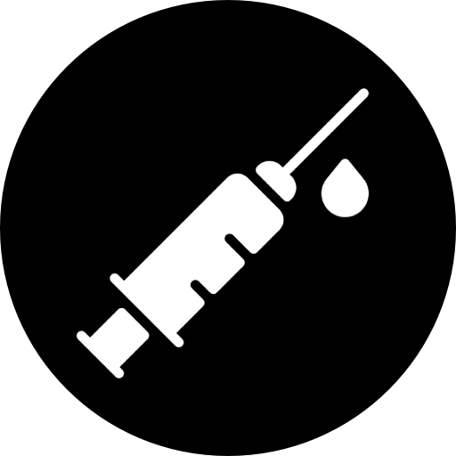

CV
 |
Mobilité Internationale Résidant actuellement en France |
Adrien Fiand Ingénieur Réseaux & Sécurité, Junior |
|
|  | Covid-19 Schéma vaccinal complet |
||
 |
FR +33 7 81 03 82 94 |
Professionnel, soucieux du détail et orienté-résultats, ayant plus de deux ans et demi d'expérience dans la gestion des réseaux et systèmes ‘cœur’. Passionné par le design et l’implémentation d'infrastructures sécurisées et résilientes, garantissant disponibilité et protection des données, je fournis un travail de qualité qui répond aux attentes clients. |
|
 |
WhatsApp +33 7 81 03 82 94 |
||
 |
E-mail fiandadrien@gmail.com |
||
 |
LinkedIn linkedin.com/in/adrien-fiand |
||
Site Web www.adrienfiand.net |
|||
|
Langages Français - Courant (Langue maternelle) Anglais - Expérimenté (TOEIC Score 960) Formation École d'ingénieurs CESI Master en ingénierie informatique (CTI) Cursus de 5 ans, cycle préparatoire intégré Pédagogie d'apprentissage par problèmes: apprentissage autonome en petits groupes. Compétences Solutions
Réseaux (LAN/WAN)
Infrastructure
Esprit-Critique - Apprentissage-Rapide |
Expériences Ingénieur Réseaux & Sécurité, Jr. | Axians (Groupe Vinci) - FR2022 - Présent
Admin Sys/Rés, Jr. | Freelance 40hr/mo Blueberry Consultants - UK03/2021 - 12/2021
Admin Système, Stage | Blueberry Consultants - UK10/2020 - 02/2021
Admin Réseaux, Stage | Aramys Cloud Service Provider - FR 01/2020 - 04/2020
Technicien Info., Stage | Hospital Center Of Arras - FR05/2019 - 06/2019
Experimental Projects Env. de Test - Boitier Pfsense + serveur « bac à sable » utilisant Proxmox & GNS3. Petite Entreprise - Test de services open-source : OpenLDAP, BindDNS, Apache. Certifications FORTINET - Network Security, Professional [NSE4] EXP. 2025 HPE - Aruba ClearPass Certified, Professional [ACCP] EXP. 2026 HPE - Aruba Product Specialist, Central [APS] EXP. 2025 AWS - Certified Sysops Administrator, Associate [AWS SysOps] EXP. 2024 CISCO - Certified Network Associate, Routing & Switching [CCNA R&S] EXP. 2023 MICROSOFT - Windows Server Administration, Fundamentals [MTA] PAS D'EXP. |
||
Référence